기계설계산업기사 (2011-03-20 기출문제)
1과목: 기계가공법 및 안전관리
1. 기계부품 또는 공구의 검사용, 게이지 정밀도 검사 등에 사용하는 게이지 블록은?
- 공작용
- 검사용
- 표준용
- 참조용
(정답률: 84%)

2. 수평식 보링 머신 중 새들이 없고, 길이방향의 이송은 베드를 따라 컬럼이 이송되며 중량이 큰 가공물을 가공하기에 가장 적합한 구조를 가지고 있는 형은?
- 테이블형
- 플레이너형
- 플로우형
- 코어형
(정답률: 78%)
3. 절삭공구 재료에서 W, Cr, V, Co 등의 원소를 함유하는 합금강은?
- 고탄소강
- 합금 공구강
- 고속도강
- 초경합금
(정답률: 71%)
4. 연삭 작업시 주의할 점에 대한 설명으로 틀린 것은?
- 숫돌 커버를 반드시 설치하여 사용한다.
- 양 숫돌차의 입도는 항상 같게 하여야 한다.
- 연삭 작업시에는 보안경을 꼭 착용하여야 한다.
- 숫돌을 나무 해머로 가볍게 두들겨 음향검사를 한다.
(정답률: 79%)
5. 전해연마의 특징에 대한 설명으로 틀린 것은?
- 가공변질층이 없다.
- 내마모성, 내부식성이 좋아진다.
- 알루미늄, 구리 등도 용이하게 연마할 수 있다.
- 가공면에는 방향성이 있다.
(정답률: 68%)
6. 다음 중 드릴 가공의 종류가 아닌 것은?
- 리밍
- 카운터 보링
- 버핑
- 스폿 페이싱
(정답률: 74%)
7. 양두(頭兩)그라인더의 숫돌차로 일감을 연삭할 때 받침대와 숫돌의 간격은 몇 mm 이내로 조정하는가?
- 3mm
- 5mm
- 7mm
- 9mm
(정답률: 68%)
8. 윤활유의 사용목적과 거리가 먼 것은?
- 윤활작용
- 냉각작용
- 비산작용
- 밀폐작용
(정답률: 61%)
9. 강판으로 된 재료에 암나사 가공을 하는데 사용되는 것은?
- 스패너
- 스크레이퍼
- 다이스
- 탭
(정답률: 80%)
10. 선반의 베드(bed)에 관한 설명으로 틀린 것은?
- 미끄럼 면의 단면 모양은 원형과 구형이 있다.
- 주로 합금주철이나 구상흑연주철 등의 고급주철로 제작한다.
- 미끄럼면은 기계가공 또는 스크레이핑(scraping)을 한다.
- 내마모성을 높이기 위하여 표면경화처리를 하고 연삭가공을 한다.
(정답률: 52%)
11. 다음 그림은 밀링에서 더브테일 가공도면이다. X의 치수로 맞는 것은?
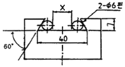
- 25.608
- 23.608
- 22.712
- 18.712
(정답률: 50%)
12. 비교측정의 장점이 아닌 것은?
- 측정범위가 넓고 표준 게이지가 필요 없다.
- 제품의 치수가 고르지 못한 것을 계산하지 않고 알 수 있다.
- 길이, 면의 각종 형상 측정, 공작기계의 정밀도 검사등 사용범위가 넓다.
- 높은 정밀도의 측정이 비교적 용이하다.
(정답률: 54%)
13. 연삭숫돌을 교환한 후 시운전 시간은 어느 정도로 하는가?
- 30초
- 1분
- 2분
- 3분 이상
(정답률: 70%)
14. 밀링 머신에서 하향 절삭에 비교한 상향절삭의 장점은 어느 것인가?
- 절삭시 백래시 영향이 적다.
- 일감의 고정이 유리하다.
- 표면거필기가 좋다.
- 공구날의 마모가 느리다.
(정답률: 75%)
15. 밀링에서 지름 150mm 커터를 사용하여 160rpm으로 절삭한다면 이때 절삭속도는 약 몇 m/min인가?
- 75
- 85
- 102
- 194
(정답률: 70%)
16. 브로치 가공에 대한 설명 중 옳지 않은 것은?
- 가공 홈의 모양이 복잡할수록 느린 속도로 가공한다.
- 절삭 깊이가 너무 작으면 인선의 마모가 증가한다.
- 브로치는 떨림을 방지하기 위하여 피치의 간격을 같게 한다.
- 절삭량이 많고 길이가 길 때에는 절삭날 수를 많게 한다.
(정답률: 54%)
17. 선반 바이트 설치 요령이다. 적합하지 않은 것은?
- 바이트 자루는 수평으로 고정한다.
- 바이트의 돌출 거리는 작업에 지장이 없는 한 길게 고정한다.
- 받침(shim)은 바이트 자루의 전체면이 닿도록 한다.
- 높이를 정확히 맞추기 위해서는 받침(shim) 1개 또는 두께가 다른 여러 개를 준비한다.
(정답률: 75%)
18. 연삭숫돌에 사용되는 숫돌 입자 중 천연산인 것은?
- 코런덤
- 알록사이트
- 카아버런덤
- 탄화붕소
(정답률: 73%)
19. 래핑작업의 장점이 아닌 것은?
- 정밀도가 높은 제품을 가공한다.
- 가공면이 매끈하다.
- 가공면의 내마모성이 좋다.
- 랩제의 장류가 쉽다.
(정답률: 74%)
20. 기어(gear)의 이(tooth)수를 등분하고자 할 때 사용하는 밀링 부속품은?
- 분할대
- 바이스
- 정면커터
- 측면 커터
(정답률: 75%)
2과목: 기계제도
21. M20 3줄 나사에서 피치가 1.5리면 리드(Lead)는 몇 mm인가?
- 1.5
- 2.5
- 3.5
- 4.5
(정답률: 83%)
22. 수면, 유면 등의 위치를 표시하는 수준면선에 사용하는 선의 종류는?
- 가는 파선
- 가는 1점 쇄선
- 굵은 파선
- 가는 실선
(정답률: 61%)
23. 다음 V벨트의 종류 중 단면의 크기가 가장 작은 것은?
- M형
- A형
- B형
- E형
(정답률: 78%)
24. KS 기계 재료 기호 중 스프링 강재인 것은?
- SPS
- SBC
- SM
- STS
(정답률: 82%)
25. 어떤 도면에 표시된 치수
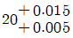
의 치수공차는 몇 mm인가?- 0.002
- 0.001
- 0.01
- 0.02
(정답률: 72%)
26. 그림과 같은 제3각 정투상 도면의 입체도로 가장 적합한 것은?
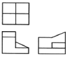
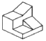
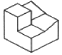
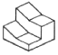
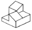
(정답률: 88%)
27. 나사 표시 “M15×1.5-6H/6h"에서 6H/6g은 무엇을 나타내는가?
- 나사의 호칭치수
- 나사부의 길이
- 나사의 등급
- 나사의 피치
(정답률: 80%)
28. 보기 도면과 같이 강판에 구멍을 가공할 경우 가공할 구멍의 크기와 개수는?
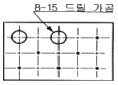
- 지름 8mm, 구멍 2개
- 지름 8mm, 구멍 15개
- 지름 15mm, 구멍 8개
- 지름 15mm, 구멍 2개
(정답률: 79%)
29. 다음과 같은 I형강 재료의 표시법으로 올바른 것은?
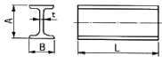
- I A×B×t-L
- t×I A×B-L
- L-I×A×B×t
- I B×A×t-L
(정답률: 83%)
30. 기호의 종류 중 위치 공차를 나타내는 기호가 아닌 것은?
- ◎
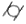
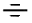
(정답률: 65%)
31. KS 용접 기호표시와 용접부 명칭이 틀린 것은?
- ⊓:플러그 용접
- ○:점 용접
- ︳︳:가장자리 용접
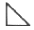
: 필릿 용접
(정답률: 82%)
32. 그림과 같은 도면에서 플랜지 A부분의 드릴구멍 깊이는?
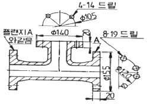
- 14
- 19
- 20
- 8
(정답률: 65%)
33. 기계 재료 중 탄소강 주강품에 해당하는 재료 기호는?
- SC 410
- SM 500
- STD 4
- SHP 1
(정답률: 70%)
34. 금속 재료의 표시 기호 중 탄소 공구강 강재를 나타낸 것은?
- SPP
- STC
- SBHG
- SWS
(정답률: 85%)
35. 다음 그림 중 접촉 부분의 상관선에 대한 도시가 가장 올바르게 작도된 것은?
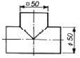
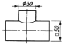
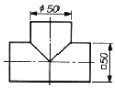
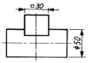
(정답률: 44%)
36. 보기 입체도에서 화살표 방향의 투상도로 가장 적합한 것은?
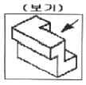
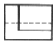
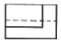
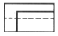
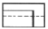
(정답률: 77%)
37. 그림의 입체도에서 화살표 방향이 정면일 경우 정면도로 가장 적합한 것은?
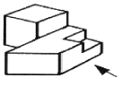
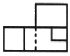
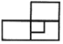
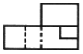
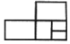
(정답률: 84%)
38. 보기 입체도에서 화살표 방향이 정면일 때 평면도로 가장 적합한 것은?
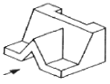
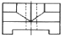
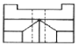
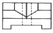
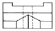
(정답률: 70%)
39. 그림과 같은 표면의 결 기호 중 2.5가 표시하는 것은?
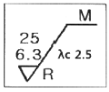
- 표면 거칠기
- 컷오프 값
- 중심선의 깊이
- 형상 계수
(정답률: 81%)
40. 그림과 같은 도면에서 우측면도로 가장 적합한 것은?
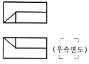
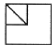
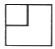
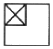
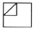
(정답률: 53%)
3과목: 기계설계 및 기계재료
41. 두랄루민은 기계적 성질이 탄소강과 비슷하며 비중은 1/3 정도로 가벼워서 항공기용 재료로 많이 사용되고 있다. 두랄루민의 성분을 올바르게 나타낸 것은?
- Al-Mg-Pb-Ni
- Al-Fe-Mg-Cu
- Al-Cu-Mg-Mn
- Al-Mn-Co-Mg
(정답률: 83%)
42. 일반적으로 탄소강에서 탄소량이 증가할수록 증가하는 물리적 성질은?
- 비중
- 열팽창계수
- 전기저항
- 열전도도
(정답률: 60%)
43. 전연성이 좋고 색깔도 아름답기 때문에 장식용 금속잡화, 악기 등에 사용되고, 박(foil)으로 압연하여 금박의 대용으로도 사용되는 것은?
- 90%Cu~10%Zb 합금
- 80%Cu~20%Zb 합금
- 60%Cu~40%Zb 합금
- 50%Cu~50%Zb 합금
(정답률: 62%)
44. 공정이 있는 합금계에서 공정성분에 가까울수록 변화하는 성질을 설명한 것으로 틀린 것은?
- 전기 및 열전도율이 적어진다.
- 인장강도, 경도가 커진다.
- 용융점이 점차 상승한다.
- 연신율, 단면수축율이 감소한다.
(정답률: 51%)
45. 다음 담금질 조직 중에서 용적변화(팽창)가 큰 조직은?
- 펄라이트
- 오스테나이트
- 마텐자이트
- 솔바이트
(정답률: 76%)
46. 다음 금속 중 전기 전도율이 가장 큰 것은?
- 알루미늄
- 마그네슘
- 구리
- 니켈
(정답률: 73%)
47. 다음 중 뜨임처리 목적으로 틀린 것은?
- 담금질 응력 제거
- 치수의 경년 변화 방지
- 연마 균열의 방지
- 내마멸성 저하
(정답률: 65%)
48. 다음 중 복합재료에서 섬유강화 금속은?
- GFRP
- CFRP
- FRS
- FRM
(정답률: 80%)
49. 다음 중 금속 침투법 중에서 Al를 침투 시키는 것은?
- 세라다이징
- 알리마이징
- 실리코나이징
- 칼로나이징
(정답률: 73%)
50. 18-8형 스테인리스강에 대한 특징을 설명한 것으로 틀린 것은?
- Cr(18%)-Ni(8%)이다.
- 내식성이 우수하며 비자성체이다.
- 오스테나이트계이다.
- 염산, 염소가스, 황산에 매우 강하다.
(정답률: 59%)
51. 그림과 같은 블록 브레이크 드럼축에 156.96Nㆍm의 제동토크를 발생시키기 위해, 레버 끝에 F=981N의 힘이 필요한 경우, 레버의 길이 a는 약 몇 mm인가? (단, 블록과 드럼사이 마찰계수 μ=0.02이다.)
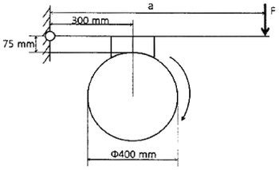
- 930
- 1⑤0
- 1140
- 1260
(정답률: 20%)
52. 미터나사의 피치가 3mm이고 유효 지름 de는 22.⑤1mm일 때 나사 효율 η는 약 얼마인가? (단, 마찰 계수 μ=0.1⑤이다.)
- η=26.2%
- η=32.2%
- η=39.2%
- η=48.8%
(정답률: 25%)
53. 400rpm으로 4kW의 동력을 전달하는 중실 스핀들 축의 최소 지름은 약 몇 mm인가? (단, 축의 허용전단응력은 20.60MPa이다.)
- 29
- 13
- 48
- 36
(정답률: 28%)
54. 로프 전동의 특징에 대한 설명으로 틀린 것은?
- 전동경로가 직선이 아닌 경우에도 사용이 가능하다.
- 벨트 전동과 비교하여 큰 동력을 전달하는데 불리하다.
- 장거리의 동력전달이 가능하다.
- 정확한 속도비의 전동이 불확실하다.
(정답률: 42%)
55. 다음 그림과 같은 맞대기 용접 이음에서, 인장하중 W[N], 강판의 두께 h[mm]라 할 때 용접길이 ℓ[mm]를 구하는 식으로 가장 옳은 것은? (단, 상하의 용접부 목두께가 각가 t1[mm], t2[mm]이고, 용접부에서 발생하는 인장응력 σt[N/mm2]이다.)
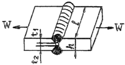
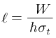
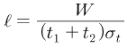
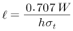
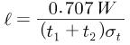
(정답률: 61%)
56. 다음 중 동력전달장치로서 운전이 조용하고, 무단변속을 할 수 있으나 일정한 속도비를 얻기가 힘든 것은?
- 마찰차
- 기어
- 체인
- 플라이 휠
(정답률: 61%)
57. 단면 50mm×50mm이고, 길이 100mm의 탄소강재가 있다. 여기에 10kN의 인장력을 길이 방향으로 주었을 때, 0.4mm가 늘어났다면, 이 때 변형률은 얼마인가?
- 0.0025
- 0.004
- 0.0125
- 0.025
(정답률: 61%)
58. 1200rpm으로 2kW의 동력을 전달시키려고 할 때 기어 잇수 Z=20, 모듈 m=4인 스퍼기어의 이에 걸리는 힘(피치원 접선방향)은 약 몇 N인가?
- 284
- 312
- 356
- 398
(정답률: 20%)
59. 동일 조건하에서 코일 스프링 처짐량을 2배로 하려면, 유효감김수는 몇 배가 되어야 하는가? (단, 스프링 소선 지름, 코일 평균 지름, 작용하중 및 스프링의 전단탄성계수 등은 일정하다.)
- 2배
- 4배
- 8배
- 16배
(정답률: 54%)
60. 미끄럼 베어링 재료의 구비조건으로 틀린 것은?
- 마찰계수가 클 것
- 내식성이 높을 것
- 피로한도가 높을 것
- 열전도율이 높을 것
(정답률: 62%)
4과목: 컴퓨터응용설계
61. CAD 시스템에서 디스플레이 장치가 아닌 것은?
- DED(Digital Equipment Display)
- PDP(Plasma Digital panel)
- TFT-LCD(Thin Film Transistor-Liquid Crystal Digital)
- CRT(Cathode Ray Tude) display
(정답률: 50%)
62. CAD에서 그래픽 소프트웨어가 반드시 가져야 할 기능이 아닌 것은?
- 데이터의 변환 기능
- 그래픽 형상을 만드는 기능
- 사용자 입력 기능
- 인터넷 네트워크 기능
(정답률: 86%)
63. 서피스 모델링의 특징에 대한 설명으로 틀린 것은?
- 은선 제거가 가능하다.
- 단면 작업을 할 수 있다.
- 유한요소법(FEM)의 적용을 위한 요소 분할이 쉽다.
- NC 데이터를 생성할 수가 있다.
(정답률: 68%)
64. R(red), G(green), B(Blue) 전자총과 CRT 표면 사이에 위치하는 CRT 소재 구조물로 삼각형 형태로 구멍이 있는 금속 그리드 판으로 되어 있으며 각 전자총에서 나오는 전자빔에 할당된 인에 정확하게 충돌하도록 하는 기능을 수행하는 부분을 무엇이라고 하는가?
- SCAN BOARD
- FRAME PLATE
- SHADOW MASK
- FRAME BUFFER
(정답률: 55%)
65. 다음 중 중앙처리장치(CPU)의 구성요소가 아닌 것은?
- 주기억장치
- 제어장치
- 논리연산장치
- 레이저 빔 기억장치
(정답률: 85%)
66. B-rep 모델링 방식의 특성이 아닌 것은?
- 화면 재생시간이 적게 소요된다.
- 3면도, 투시도, 전개도 작성이 용이하다.
- 데이터의 상호 교환이 쉽다.
- 입체의 표면적 계산이 어렵다.
(정답률: 60%)
67. 이미 정의된 두 곡면을 매끄럽게 연결하는 것을 무엇이라 하는가?
- 스위핑(sweeping)
- 스키닝(skinning)
- 블랜딩(blending)
- 리프팅(lifting)
(정답률: 73%)
68. 두 벡터
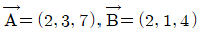
일 때 벡터의 내적을 구하면 얼마인가?- 32
- 33
- 34
- 35
(정답률: 43%)
69. 구멍(hole), 슬롯(slot), 포켓(pocket) 등의 형상단위를 라이브러리(library)에 미리 갖추어 놓고 필요 시 이들의 치수를 변화시켜 설계에 사용하는 모델링 방식은?
- Parametric modeling
- Feature-based modeling
- Boindary modeling
- Boolean operation modeling
(정답률: 62%)
70. 도형을 원점에 대한 점대칭에 의하여 그리려고 한다. 변환 Matrix가 옳게 표시된 것은?
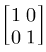
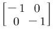
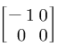
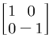
(정답률: 54%)
71. 상이한 CAD 시스템 간의 데이터의 교환을 목적으로 개발된 표준데이터 교환 형식이 아닌 것은?
- GKS
- HWP
- STEP
- IGES
(정답률: 72%)
72. 벡터
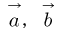
및 가 공간상에서 같은 시작점을 가지고 서로 다른 방향으로 향한다고 할 때 세 벡터가 이루는 부피를 표현하는 식은?(정답률: 41%)
73. 다음 중 원호를 정의하는 방법 중 틀린 것은?
- 시작점, 중심점, 각도를 지정
- 시작점, 중심점, 끝짐을 지정
- 시작점, 중심점, 현의 길이를 지정
- 시작점, 끝점, 현의 길이를 지정
(정답률: 56%)
74. 3차원으로 형상을 표현할 때 형상의 모서리(edge)선(직선 및 곡선 등) 만을 이용해서 표현하는 모델링 방법은?
- solid 모델
- surface 모델
- wire frame 모델
- system 모델
(정답률: 77%)
75. 다음 설명에 해당하는 것은?
- Reverse engineering
- Feature-based modeling
- Digital Mock-Up
- virtual Manufacturing
(정답률: 69%)
76. CAD/CAM 시스템에 의해서 기존에 구성한 도형을 이용하여 새로운 도형자료를 구성하는 기능인 자료변환(transformation) 기능에 속하지 않는 것은?
- Zooming
- Translation
- Scaling
- Rotation
(정답률: 68%)
77. 다음 중 Bezier 곡선의 성질에 해당되지 않는 것은?
- 곡선의 차수는 “조정점의 개수-1” 이다.
- 곡선은 블록포(convex hull) 안에 위치한다.
- 한 개의 조정점을 움직이면 곡선 일부의 모양만이 변한다.
- 곡선의 끝점과 조정점에 의 한 다각형의 끝점이 일치한다.
(정답률: 67%)
78. “x2+y2+z2-4x+6y-10z+2=0"인 방정식으로 표현되는 구의 중심점과 반지름은 각각 얼마인가?
- 중심(-2, 3, -5), 반지름:6
- 중심(2, -3, 5), 반지름:6
- 중심(-4, 6, -10 반지름:2
- 중심(4, -6, 10), 반지름:2
(정답률: 47%)
79. LAN을 구성할 때 전송매체에 따라 구분할 수도 있다. 이 때 디지털 신호형식으로 전송하는 베이스밴드(base band)와 400MHz정도의 주파수를 갖는 브로드밴드(broad band)방식으로 전송하는 전송매체는?
- 광(optical) 케이블
- 트위스트 페어(twisted pair) 케이블
- 동축(coaxial) 케이블
- 와이어(wire) 케이블
(정답률: 42%)
80. 4개의 모서리 점과 4개의 경계곡선으로 곡면을 표현하는 것은?
- Coons 곡면
- Ruled 곡면
- B-Spline 곡면
- Ferguson 곡면
(정답률: 78%)